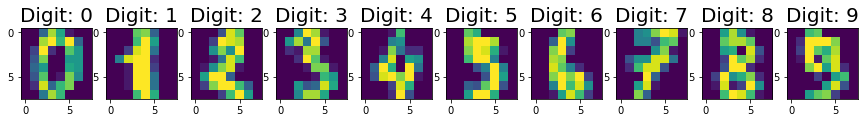
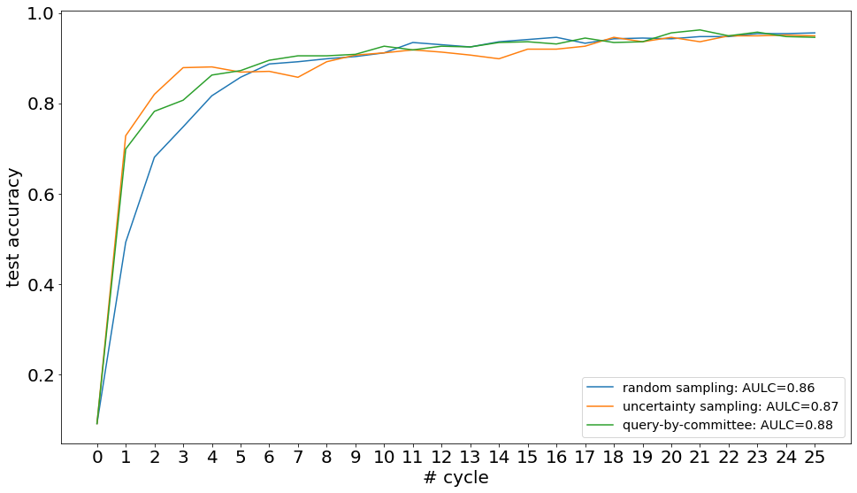

Deep Pool-based Active Learning: Scikit-activeml with Skorch#
In this brief tutorial, we show an example use-case of our package skactiveml with the Python package `skorch <https://skorch.readthedocs.io/en/stable/>`__, which is a scikit-learn wrapper for Pytorch models. This way, we are able to implement and test deep learning models in combination with query strategies implemented in our framework.
[1]:
import matplotlib.pyplot as plt
import numpy as np
import torch
import warnings
from copy import deepcopy
from skactiveml.classifier import SklearnClassifier
from skactiveml.pool import UncertaintySampling, QueryByCommittee, RandomSampling
from skactiveml.utils import call_func
from sklearn.datasets import load_digits
from sklearn.ensemble import VotingClassifier
from sklearn.model_selection import train_test_split
from sklearn.preprocessing import StandardScaler
from skorch import NeuralNetClassifier
from torch import nn
MISSING_LABEL = -1
RANDOM_STATE = 0
FONTSIZE = 20
torch.manual_seed(RANDOM_STATE)
torch.cuda.manual_seed(RANDOM_STATE)
warnings.filterwarnings("ignore")
Loading Digit Data Set#
For simplicity, we load the digit data set available through the sklearn package. The 8x8 images show handwritten digits from 0 to 9 and the task is to recognize the digits in the images.
[2]:
# Load digit data set.
X, y_true = load_digits(return_X_y=True)
# Visualize first 10 images.
fig, axes = plt.subplots(figsize=(15, 5), nrows=1, ncols=10)
for i in range(10):
axes[i].set_title(f'Digit: {y_true[i]}', fontsize=FONTSIZE)
axes[i].imshow(X[i].reshape((8, 8)))
plt.show()
# Standardize data.
X = StandardScaler().fit_transform(X)
# Reshape samples to n_samples x n_channels x width x height to fit skorch
# requirements.
X = X.reshape((len(X), 1, 8, 8))
# Set data types according to skorch requirements.
X, y_true = X.astype(np.float32), y_true.astype(np.int64)
# Identify list of possible classes.
classes = np.unique(y_true)
# Make a 66-34 train-test split.
X_train, X_test, y_train, y_test = train_test_split(
X, y_true, train_size=0.66, random_state=RANDOM_STATE
)

Convolutional Neural Network Ensemble#
In a next step, we define a convolutional neural network (CNN) ensemble consisting of multiple base CNNs with different learning rates and initializations.
[3]:
# Define base module.
class ClassifierModule(nn.Module):
def __init__(self):
super(ClassifierModule, self).__init__()
self.conv_layer = nn.Sequential(
nn.Conv2d(1, 32, kernel_size=3, stride=1, padding=0),
nn.ReLU(),
nn.MaxPool2d(kernel_size=2, stride=2)
)
self.dense_layer = nn.Linear(288, len(classes))
self.outpout = nn.Softmax(dim=-1)
def forward(self, X):
X = self.conv_layer(X)
X = X.reshape(X.size(0), -1)
X= self.dense_layer(X)
X = self.outpout(X)
return X
# Create list of three base CNNs.
learning_rates = [1.e-3, 1.e-2, 1.e-1]
estimators = []
for i, learning_rate in enumerate(learning_rates):
net = NeuralNetClassifier(
ClassifierModule,
max_epochs=100,
lr=learning_rate,
verbose=0,
train_split=False,
)
net.initialize()
estimators.append((f'clf {i}',
SklearnClassifier(
estimator=net, missing_label=MISSING_LABEL,
random_state=i, classes=classes)
)
)
# Creat voting ensemble out of given ensemble list.
ensemble_init = SklearnClassifier(
estimator=VotingClassifier(estimators=estimators, voting='soft'),
missing_label=MISSING_LABEL, random_state=RANDOM_STATE, classes=classes
)
Pool-based Active Learning#
For our ensemble, we evaluate three different query strategies, i.e., random sampling, uncertainty sampling, and query-by-committee, regarding their sample selection. For this purpose, we start with zero labels and make 25 iterations of an active learning cycle with a batch size of 20.
[4]:
# Define setup.
n_cycles = 25
batch_size = 20
qs_dict = {
'random sampling': RandomSampling(random_state=RANDOM_STATE, missing_label=MISSING_LABEL),
'uncertainty sampling': UncertaintySampling(random_state=RANDOM_STATE, missing_label=MISSING_LABEL),
'query-by-committee': QueryByCommittee(random_state=RANDOM_STATE, missing_label=MISSING_LABEL),
}
acc_dict = {key: np.zeros(n_cycles + 1) for key in qs_dict}
# Perform active learning with each query strategy.
for qs_name, qs in qs_dict.items():
torch.manual_seed(RANDOM_STATE)
torch.cuda.manual_seed(RANDOM_STATE)
print(f'Execute active learning using {qs_name}.')
# Copy initial ensemble model.
ensemble = deepcopy(ensemble_init)
# Create array of missing labels as initial labels.
y = np.full_like(y_train, fill_value=MISSING_LABEL, dtype=np.int64)
# Execute active learning cycle.
for c in range(n_cycles):
# Fit and evaluate ensemble.
acc = ensemble.fit(X_train, y).score(X_test, y_test)
acc_dict[qs_name][c] = acc
# Select and update training data.
query_idx = call_func(
qs.query, X=X_train, y=y, clf=ensemble, fit_clf=False, ensemble=ensemble,
fit_ensemble=False, batch_size=batch_size
)
y[query_idx] = y_train[query_idx]
# Fit and evaluate ensemble.
ensemble.fit(X_train, y)
acc_dict[qs_name][n_cycles] = ensemble.score(X_test, y_test)
Execute active learning using random sampling.
Execute active learning using uncertainty sampling.
Execute active learning using query-by-committee.
Visualize Results#
In the following, we plot the obtained learning curves including the area under learning curve (AULC) scores per query strategy.
[5]:
cycles = np.arange(n_cycles + 1, dtype=int)
plt.figure(figsize=(16, 9))
for qs_name, acc in acc_dict.items():
plt.plot(cycles, acc, label=f'{qs_name}: AULC={round(acc.mean(), 2)}')
plt.xticks(cycles, fontsize=FONTSIZE)
plt.yticks(fontsize=FONTSIZE)
plt.xlabel('# cycle', fontsize=FONTSIZE)
plt.ylabel('test accuracy', fontsize=FONTSIZE)
plt.legend(loc='lower right', fontsize='x-large')
plt.show()
